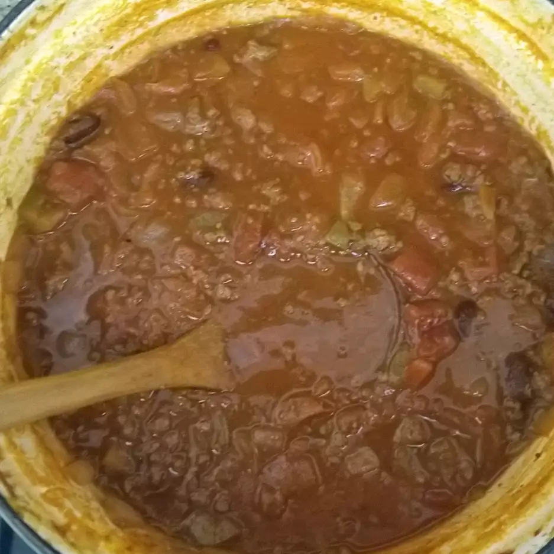

Pumpkin Chili

Description
My hometown has a pumpkin festival every year and this is one of the recipes our family enjoys.
Ingredients
- 2 pounds ground beef
- 1 large onion, diced
- 1 green bell pepper, diced
- 2 (15 ounce) cans kidney beans, drained
- 1 (46 fluid ounce) can tomato juice
- 1 (28 ounce) can peeled and diced tomatoes with juice
- ½ cup canned pumpkin puree
- 1 tablespoon pumpkin pie spice
- 1 tablespoon chili powder
- ¼ cup white sugar
Steps
- In a large pot over medium heat, cook beef until brown; drain. Stir in onion and bell pepper and cook 5 minutes. Stir in beans, tomato juice, diced tomatoes and pumpkin puree. Season with pumpkin pie spice, chili powder and sugar. Simmer 1 hour.